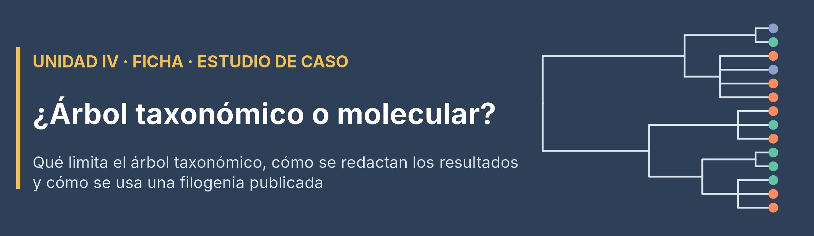

En el Taller 3 se trabajó con un árbol construido a partir de la clasificación taxonómica de las especies, no a partir de ADN. Esta ficha explica qué limita ese tipo de árbol, cómo se redactan los resultados obtenidos con él y qué se puede hacer si el grupo decide usar una filogenia molecular en el estudio de caso.
ImportanteEn una frase
El árbol taxonómico es suficiente para la ruta mínima del estudio de caso. Lo que no se puede hacer con él es interpretar la PD como tiempo evolutivo: con un árbol taxonómico, la PD mide distinción taxonómica.
1. Las tres opciones, en una tabla
| Árbol taxonómico | Filogenia molecular publicada | Construir el árbol desde secuencias de ADN | |
|---|---|---|---|
| Qué representan las ramas | Niveles de la clasificación (una convención: Grafen o ramas iguales) | Tiempo de divergencia estimado, en millones de años | Depende del gen, del modelo y de la datación |
| Cómo se obtiene | Desde la tabla orden / familia / género / especie (Taller 3 y Guía de complementos FD y PD) | Se poda un árbol que ya existe a la lista de especies del grupo | Se descargan secuencias, se alinean, se infiere el árbol y se data |
| Morfoespecies (sp., cf., aff.) | Se incluyen sin problema, en su género | No están en el árbol: se ubican en su género | Solo si tienen secuencia |
| Esfuerzo | Bajo (ya se practicó en el Taller 3) | Medio (paquete de R y conexión a internet) | Alto (es contenido de otro curso) |
| En el estudio de caso | Ruta mínima | También vale para la ruta mínima; es opcional y no suma puntos por sí sola | No se espera |
2. Qué limita un árbol taxonómico
- Las ramas son una decisión del analista. Con Grafen o con ramas iguales, la magnitud de la PD cambia. Por eso se debe declarar el método.
- Los rangos no son equivalentes. Una familia puede tener 10 o 100 millones de años. No se pueden comparar valores de PD entre grupos (peces frente a escarabajos) ni con otros estudios.
- Politomías. Todas las especies de un mismo género quedan a la misma distancia entre sí: el árbol no distingue cuáles son más cercanas.
- La clasificación no siempre es una filogenia. Si un grupo de la clasificación reúne linajes que no están emparentados, el árbol transmite relaciones falsas.
Aun así, para las métricas de comunidad que se usan en el curso, los árboles de baja resolución suelen dar resultados muy parecidos a los de árboles moleculares (Swenson, 2009; Li et al., 2019). Lo que más se afecta es la parte fina del árbol:
| Métrica | Con árbol taxonómico |
|---|---|
| PD de Faith / Hill filogenético q = 0 | Confiable |
| MPD ponderado / Rao filogenético (A2) | Confiable |
| Hill filogenéticos q = 1 y 2 (B1, B2) | Confiables |
| MNTD y NTI | Sensibles a las politomías: se interpretan con cautela |
| Señal filogenética (K de Blomberg, λ de Pagel) | Poco confiable |
3. Cómo se redacta en los resultados
| Redacción recomendada | Redacción que se debe evitar |
|---|---|
| «La zona X reúne linajes taxonómicamente más distintos.» | «La zona X tiene más historia evolutiva.» |
| «La PD se calculó con un árbol construido desde la clasificación (orden, familia, género), con longitudes de rama de Grafen; mide distinción taxonómica.» | «Se calculó la PD» (sin indicar con qué árbol). |
| «El resultado se mantuvo con ramas de longitud igual.» | Comparar el valor de PD obtenido con el de otro estudio o grupo. |
4. Si se opta por el árbol taxonómico (lo esperado)
- En los métodos se indica la fuente de la clasificación (y su versión), los niveles usados y el método de longitudes de rama.
- Se recomienda, además, un análisis de sensibilidad rápido: repetir Rao con ramas de longitud igual. Si la conclusión no cambia, el resultado es defendible.
Código
# 'arbol' es el árbol taxonómico del grupo y 'biol' la matriz especies x unidades
arbol_igual <- ape::compute.brlen(arbol, 1) # Todas las ramas con longitud 1
arbol_igual$root.edge <- 0
sp <- rownames(biol) # Mismo orden de especies que la matriz: Rao() no revisa nombres
d_grafen <- cophenetic(arbol)[sp, sp]
d_grafen <- as.dist(d_grafen / max(d_grafen))
d_igual <- cophenetic(arbol_igual)[sp, sp]
d_igual <- as.dist(d_igual / max(d_igual))
source("Rao.R")
cbind(Grafen = Rao(biol, dfunc = NULL, dphyl = d_grafen)$PD$Alpha,
Iguales = Rao(biol, dfunc = NULL, dphyl = d_igual)$PD$Alpha)5. Si se usa una filogenia molecular publicada (opcional)
No hace falta saber filogenética: se toma un árbol que ya existe y se poda a la lista de especies del grupo.
5.1 Dónde conseguirla
| Grupo | Fuente sugerida |
|---|---|
| Peces | Paquete fishtree (Rabosky et al., 2018) |
| Plantas (bosque seco) | Paquete V.PhyloMaker2 (Jin y Qian, 2022) |
| Hormigas | Árbol de géneros de Moreau y Bell (2013) |
| Escarabajos coprófagos | Árbol de géneros de Tarasov y Dimitrov (2016) |
Los detalles por base de datos están en la Guía de complementos FD y PD para los estudios de caso. Ambos paquetes requieren conexión a internet.
Código
# Peces: install.packages("fishtree")
library(fishtree)
arbol_mol <- fishtree_phylogeny(species = rownames(biol)) # Cronograma en millones de años
# La función avisa qué especies no encontró: esas se ubican en el paso 2 de la sección 5.2
# Plantas: devtools::install_github("jinyizju/V.PhyloMaker2")
library(V.PhyloMaker2)
lista <- data.frame(species = tabla$Especie,
genus = tabla$Genero,
family = tabla$Familia)
res <- phylo.maker(sp.list = lista, scenarios = "S3") # Agrega las especies faltantes en su género o familia
arbol_mol <- res$scenario.35.2 Del árbol publicado al código del Taller 3: cuatro pasos
Código
library(ape); library(phytools); library(stringr)
# Paso 1. Nombres: los árboles publicados usan "Genero_especie"
arbol_mol$tip.label <- str_squish(gsub("_", " ", arbol_mol$tip.label))
especies <- str_squish(rownames(biol))
faltan <- setdiff(especies, arbol_mol$tip.label) # Especies de la matriz que no están en el árbol
faltan
# Paso 2. Ubicar las faltantes en su género (función de la sección 5.3)
for (sp in faltan) arbol_mol <- ubicar_en_genero(arbol_mol, sp)
setdiff(especies, arbol_mol$tip.label) # Debe quedar vacío (o se decide a mano dónde van las restantes)
# Paso 3. Podar, y revisar raíz y ultrametría
arbol_mol <- keep.tip(arbol_mol, intersect(especies, arbol_mol$tip.label))
is.rooted(arbol_mol); is.ultrametric(arbol_mol)
# Si is.ultrametric() da FALSE solo por redondeo: arbol_mol <- force.ultrametric(arbol_mol, method = "extend")
# Paso 4. Profundidad del árbol = Reftime de iNEXT3D(), ahora en millones de años
max(node.depth.edgelength(arbol_mol))A partir de aquí el código es el mismo del Taller 3: cophenetic() para la distancia de Rao(dphyl = ...), y el árbol en PDtree de iNEXT3D() e iNEXTbeta3D(). La diferencia está en la lectura: con PDtype = "meanPD", el resultado es el número efectivo de linajes a lo largo de los millones de años que indica Reftime.
5.3 Función para ubicar una especie en su género
Hace lo mismo que se hizo con Notropis aguirrepequenoi en el Taller 3. Si el género tiene varias especies en el árbol, une la nueva al nodo del género; si tiene una sola, la une a mitad de su rama. Si el género no está en el árbol, emite un aviso y la decisión queda a cargo del grupo.
Código
ubicar_en_genero <- function(arbol, especie) {
genero <- stringr::word(especie, 1)
congeneres <- arbol$tip.label[stringr::word(arbol$tip.label, 1) == genero]
if (length(congeneres) == 0) {
message("Sin congéneres en el árbol: ", especie,
" -> se ubica a mano en su familia, o se usa el árbol taxonómico")
return(arbol)
}
alturas <- ape::node.depth.edgelength(arbol)
prof <- max(alturas)
if (length(congeneres) >= 2) {
nodo <- ape::getMRCA(arbol, congeneres) # Nodo del género
phytools::bind.tip(arbol, especie, where = nodo,
edge.length = prof - alturas[nodo])
} else {
punta <- which(arbol$tip.label == congeneres)
rama <- arbol$edge.length[arbol$edge[, 2] == punta]
phytools::bind.tip(arbol, especie, where = punta,
position = rama / 2, edge.length = rama / 2)
}
}Ejemplo mínimo con un árbol inventado de peces del Caribe (las longitudes de rama no son reales):
Código
library(ape)
arbol_demo <- read.tree(text = paste0(
"(((Lutjanus_griseus:10,Lutjanus_synagris:10):5,Lutjanus_analis:15):35,",
"((Haemulon_plumierii:20,Haemulon_aurolineatum:20):20,",
"((Epinephelus_morio:30,Mycteroperca_bonaci:30):5,Gerres_cinereus:35):5):10);"))
arbol_demo$tip.label <- gsub("_", " ", arbol_demo$tip.label)
especies_demo <- c("Lutjanus griseus", "Lutjanus apodus", "Epinephelus morio",
"Epinephelus adscensionis", "Gerres cinereus", "Diapterus auratus")
for (sp in setdiff(especies_demo, arbol_demo$tip.label))
arbol_demo <- ubicar_en_genero(arbol_demo, sp)Sin congéneres en el árbol: Diapterus auratus -> se ubica a mano en su familia, o se usa el árbol taxonómicoCódigo
arbol_demo <- keep.tip(arbol_demo, intersect(especies_demo, arbol_demo$tip.label))
c(enraizado = is.rooted(arbol_demo), ultrametrico = is.ultrametric(arbol_demo)) enraizado ultrametrico
TRUE TRUE Código
cophenetic(arbol_demo) # Distancias cofenéticas (unidades del árbol de ejemplo) Lutjanus apodus Lutjanus griseus Epinephelus morio
Lutjanus apodus 0 30 100
Lutjanus griseus 30 0 100
Epinephelus morio 100 100 0
Epinephelus adscensionis 100 100 30
Gerres cinereus 100 100 70
Epinephelus adscensionis Gerres cinereus
Lutjanus apodus 100 100
Lutjanus griseus 100 100
Epinephelus morio 30 70
Epinephelus adscensionis 0 70
Gerres cinereus 70 0Lutjanus apodus quedó en el nodo de su género (a 30 unidades de L. griseus) y Epinephelus adscensionis junto a su único congénere (a 30 unidades de E. morio). Diapterus auratus no tenía congéneres en el árbol: el aviso indica que su ubicación se decide a mano. Para verlo gráficamente, basta con ejecutar plot(arbol_demo) en RStudio.
AdvertenciaAntes de confiar en el resultado
- Si un género no es monofilético en el árbol publicado, su nodo común puede quedar muy profundo y la especie agregada quedaría lejos de sus parientes. Conviene graficar el árbol y revisarlo.
- Se debe citar la fuente del árbol y su versión, e indicar cuántas especies se ubicaron a mano.
- Si más de la mitad de las especies requieren ubicarse a mano, el árbol publicado aporta poco frente al taxonómico.
6. ¿Y construir el árbol con ADN?
Construir una filogenia desde secuencias (descargarlas de GenBank, alinearlas, elegir un modelo de evolución, inferir el árbol y datarlo) es una competencia propia de un curso de filogenética, no de esta asignatura. Toma semanas, y con un solo gen (por ejemplo, el código de barras COI) los nodos profundos suelen quedar mal resueltos: el resultado puede ser peor que el árbol taxonómico. No se espera en el estudio de caso. Si el grupo ya dispone de secuencias propias (por ejemplo, de una tesis), se recomienda consultarlo con los docentes antes de intentarlo.
7. Lista de chequeo para los métodos
Referencias
- Clarke, K. R. y Warwick, R. M. (1998). A taxonomic distinctness index and its statistical properties. Journal of Applied Ecology, 35, 523–531.
- Jin, Y. y Qian, H. (2022). V.PhyloMaker2: an updated and enlarged R package that can generate very large phylogenies for vascular plants. Plant Diversity, 44, 335–339.
- Li, D. et al. (2019). For common community phylogenetic analyses, go ahead and use synthesis phylogenies. Ecology, 100, e02788.
- Moreau, C. S. y Bell, C. D. (2013). Testing the museum versus cradle tropical biological diversity hypothesis: phylogeny, diversification, and ancestral biogeographic range evolution of the ants. Evolution, 67, 2240–2257.
- Rabosky, D. L. et al. (2018). An inverse latitudinal gradient in speciation rate for marine fishes. Nature, 559, 392–395.
- Swenson, N. G. (2009). Phylogenetic resolution and quantifying the phylogenetic diversity and dispersion of communities. PLoS ONE, 4, e4390.
- Tarasov, S. y Dimitrov, D. (2016). Multigene phylogenetic analysis redefines dung beetles relationships and classification (Coleoptera: Scarabaeidae: Scarabaeinae). BMC Evolutionary Biology, 16, 257.